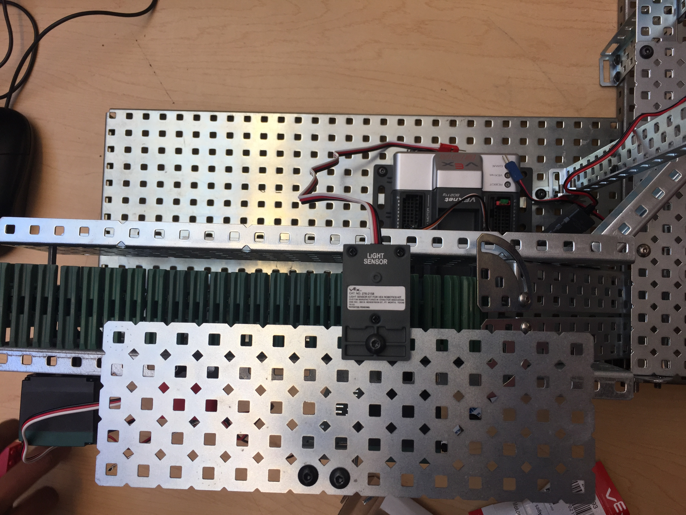
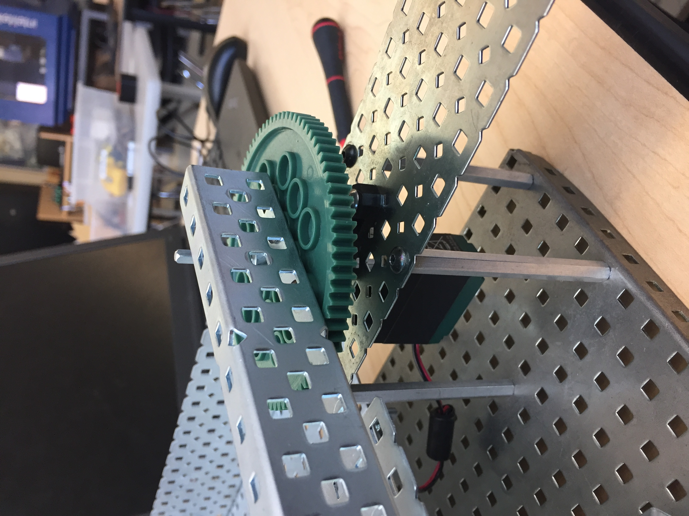

Water Filtration Project:
6/2/18-6/17/18, Ningxia, China
This summer I traveled to a remote village in Ningxia, China with
other students in California to work on a water filtration project.
The objective of the project was to bring and test sustainable filtration
systems that the people in the village could use. When we first got to
the village, we conducted a series of interviews, from which we learned that
a majority of the villagers obtained their water from the rain or
the Yellow River. Both of these water sources proved quite hazardous
when my group tested the sources for hazardous chemicals. During the
trip, I was chosen as the co-leader of my group and it was my job to
delegate tasks and come up with daily goals for my group. My group was able
to successfully get rid of many of the contaminants in the villagers' water
and distribute some of the Mesopaper filters that we brought. We chose Mesopaper
because it was very durable, sustainble, biodegradable, and effective. After
this trip, my club back in California hopes to maintain contact with the
villagers and set up a system to transport them more villagers.
Click here to access a copy of the project documentation.
Click here to access a copy of the interviews we conducted in the village.
Base Isolation Project:
7/16/18-8/13/18, UCSD COSMOS
This summer, I had the opportunity to work with other students around
California on project regarding certain aspects of Civil Engineering.
I worked on this project for around one month on the UCSD campus, and I
received assistance from both college professors and currently enrolled
students from UCSD. Each group in my camp cluster was assigned the task
of building an earthquake resistant system and researching a certain
seismic region. My group in particular researched base isolation systems
which reduce the acceleration and movement of buildings during earthquakes.
We also researched the seismic characteristics of the Peru-Chile Trench,
and how these base isolation mechanisms could be implemented in the region.
Additionally during the camp, each student had the option to write an
essay explaining how engineering ethics was important to their desired
field. I wanted to understand more about how important it was for engineers
to be conscious of their design decisions in order to make the safest
structures possible.
Click here to access a copy of the project documentation.
Click here to access a copy of ethics essay.
Machine Control Design Project:
4/20/18-5/3/18, Principles of Engineering
The objective of this project was to create a prototype with
a companion code that would complete a certain task given to us
by our teacher. With the options provided, my group chose to make
a cookie machine. This machine was supposed to move cookies to a
separate area and once three cookies had been transferred, the
machine would again move those three cookies to an additional area
that served as a packaging area. The machine was to be made out
of multiple VEX parts and was to be programmed using the RobotC
software. My main role in this project was the building of the
actual prototype. My group had a lot of issues with collaborating
because multiple group members were gone for up to a week. I really
had to make sure that we were keeping a strict building schedule
so we could finish the prototype quickly and then program the actual
movements of the device. I also had a large role in choosing the
parts to build the prototype. When we first began building, our
group only had a rough sketch of what we wanted it to look like
and we also ran into many issues. At times our "cookie" would not
slide smoothly down the incline plane we created or the light sensors
would not sense the "cookie" correctly. This required me to be flexible
so that I could deal with the problems quickly and move onto the
next step. I also did a lot of work on the documentation, specifically
creating the decision matrix and describing the final design. A
lot of specific explanations were required to complete these sections
properly so I had to spend a lot of time making sure that our design
process was clear. From this project I learned how to be flexible
and I learned more about the programming process. I had to learn
that your code will not always work perfectly the first time, and
that you just have to keep persisting to make it right. I also had
to be flexible and deal with our problems head in instead of becoming
upset, which is a very useful skill in life and the workforce.



Click here to access a copy of the project documentation.
Click here to access a copy of the project grading rubric.
Solar Hydrogen Vehicle Project:
11/2/17-11/16/17, Principles of Engineering
The main objective of this project was to design a prototype
that used solar and hydrogen cells as its fuel source and create
the fastest and most efficient system possible. Multiple configurations
of each type of cell had to be configured using a breadboard and
the values of current and voltage were used to calculate overall
power and efficiency. In addition to building the prototype, documentation
of the design process and outcome were necessary. My main role in
this project was helping design the prototype that would hold the
fuel cells, calculating power and efficiency of each configuration,
and labelling the pictures in the documentation. We had constraints
regarding vehicle size, so I had to find a small vehicle where large
fuel cells could fit. I designed the chain and sprocket system that
connected to the motor turned by the fuel cells and the wheels of
the prototype. I also figured out how to attach the hydrogen and
solar cells to the top of the vehicle. Regarding measurements, I
measured the voltage and current with a multimeter based on how my
team wired the breadboard and I calculated power with basic formulas
which were added to the documentation. Through the design process,
my team ran into some issues such as the vehicle becoming too heavy.
I had to lead my team to decide which components of our original
design were not necessary. From this issue I learned to collaborate
and lead a team. From this project, I also learned the skills of
efficiency calculation and scaling models. Both of these skills
would be very useful in my desired career of environmental engineering
that require the ability to figure how efficient a model is, and
how to scale it to a real and usable device.
Click here to access a copy of the project documentation.
Click here to access a copy of the project grading rubric.